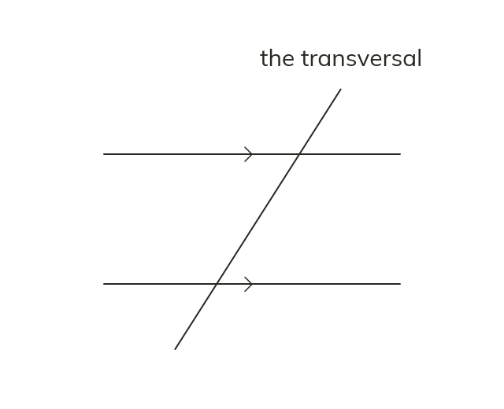

Transversal
A transversal is a straight line crossing two or more lines. When those lines are marked parallel, its angles follow fixed patterns.
A transversal is a straight line that crosses two or more other lines. When the two lines it crosses are parallel (shown by matching arrow marks), the angles it creates follow fixed patterns wherever the crossing happens.